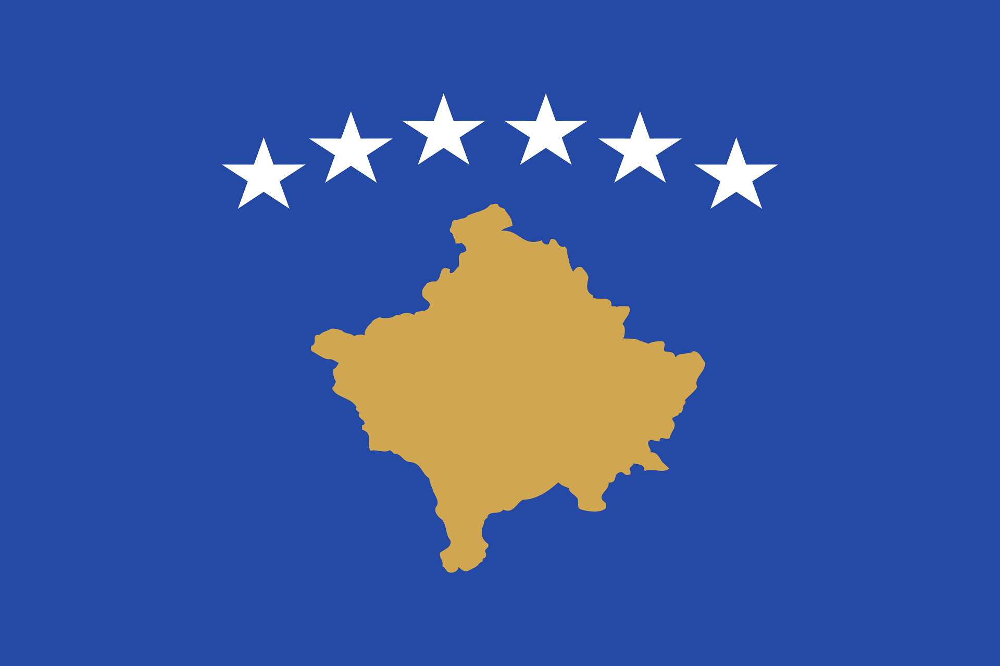

Kosovo – Ein junges Land im Balkan
Kosovo liegt in Südosteuropa und grenzt an Serbien, Albanien und Nordmazedonien.
Die Hauptstadt ist Pristina.
Geografie und Klima
Das Land ist überwiegend bergig.
Das Klima ist kontinental.
Geschichte und Kultur
Kosovo hat eine lange und bewegte Geschichte.
Traditionen spielen eine wichtige Rolle.
Sprache und Regionen
Die Amtssprachen sind Albanisch und Serbisch.
Wirtschaft und Tourismus
Landwirtschaft und Dienstleistungen sind wichtig.
Der Tourismus entwickelt sich langsam.
Fazit
Kosovo ist ein junges Land mit starker Identität.